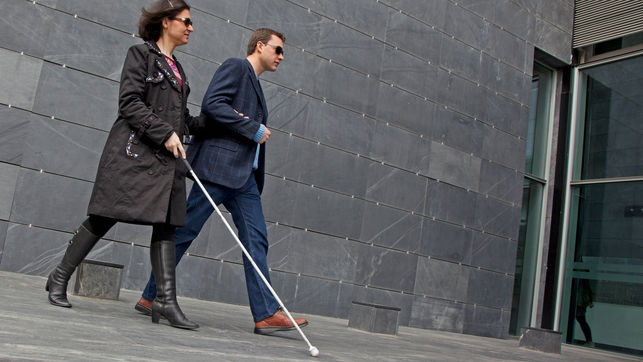
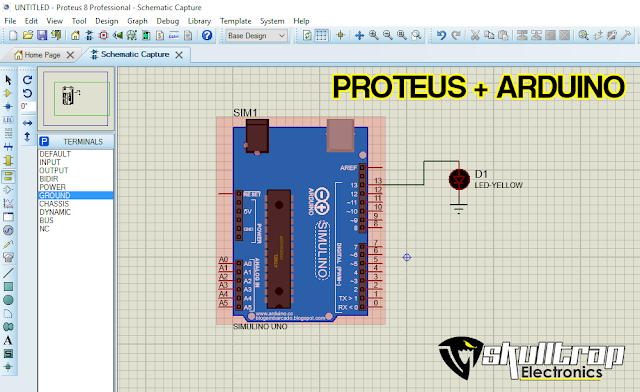

¿Cómo funciona?  Este dispositivo sirve par ayudar a las personas incapacitadas. Un baston con un radar para persivir un objeto por medio de un sonido del radar, lo alertara cuando algo se acerca o persiva el radar. 